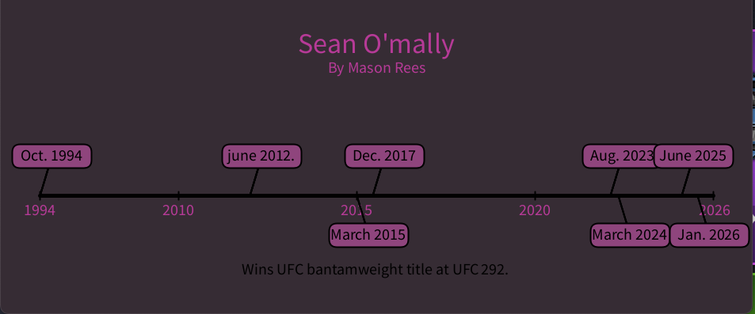
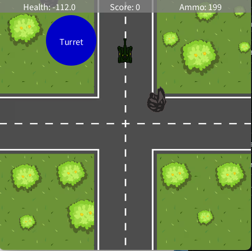

This project recreated an Etch-A-Sketch design using Processing and drawing commands.

This project shows a timeline of Sean O'Malley’s career milestones, including championship wins and important UFC events.

This project is a top-down tank survival game created with Processing. The player controls a tank, avoids enemies, and defends against attacks.
